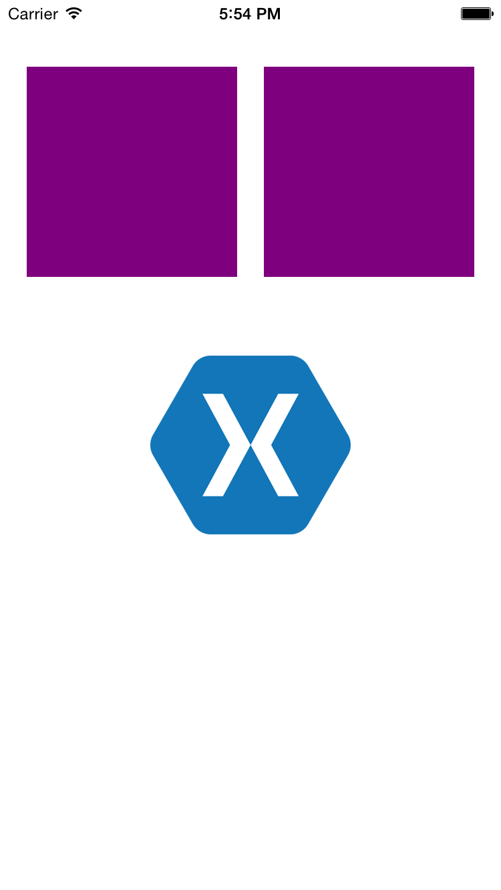

Duration
20 minutes
Goals
The primary goal of this lab is to introduce you to touch events on the iOS platform.
Required assets
There is a start solution in in the Exercise 1 folder. Additionally, there is a completed solution which you can use to compare your work.
Challenge
This is an individual exercise, intended for you to complete on it on your own during class; take advantage of the live instructor and ask questions. Here are the high-level steps we will be working through:
- Open the Start Solution in the Exercise 1 folder
- Name the 3 Views in the storyboard; name the
UImageViewimgLogo and name the two simpleUIVIews boxOne and boxTwo. - Setup the View Controller
- Open DragAndSnapViewController.cs.
- Add a class level
booleannamed imageIsMoving. - In
ViewDidLoad, usethis.View.BringSubviewToFrontto ensure imgLogo is shown above the other views.
- Respond to Touches Began events; check if the touch occurred within imgLogo and set imageIsMoving to
true. - Respond to Move events; move imgLogo to current position
- Respond to Touches Evented events; if the touch ends within the bounds of either box, center imgLogo within the box, otherwise center within the view controller.
- Respond to Touches Cancelled events; center imgLogo within the view controller.
Steps
Below are the step-by-step instructions to complete the exercise.
Open the Start Solution
- Open the start solution in the Exercise 1 folder.
- Run the application, you should see two boxes and a Xamarin logo.
Name the Views
- Open MainStoryboard.storyboard.
- Select the Xamarin logo
UIImageView. In the properties pane, under identity, set its name to imgLogo. - Repeat the above steps for the 2 purple boxes and name them boxOne and boxTwo respectively.
Setup the View Controller
- Open DragAndSnapViewController.cs.
- We're going use a
booleanto track when the image is being moved. Add a class levelboolnamed imageIsMoving. - We also want to make sure the Xamarin logo appears above the boxes.
In the
ViewDidLoadmethod, callBringSubviewToFronton the View Controller'sViewand pass in imgLogo.
Respond to Touches Began events
- Override the
TouchesBeganmethod. - Get a reference to the
UITouchobject from theNSSettouches parameter. Cast the touches' AnyObject property to aUITouch. - Check to see if the touch occurred within the Xamarin logo
UIImageView. Use theContainsmethod defined on xamLogo's frame. IfContainsreturns true, set imageIsMoving totrue.
Respond to Moved events
- Override
TouchesMoved. - Like you did in the previous step, get a reference to the
UITouch(see above for instructions). - Return from the method if you don't have a valid touch object or imageIsMoving is
false. - Get the change in position from the last update.
Use touches'
PreviousLocationInViewandLocationInViewmethods. - Use the delta values to update the position of imgLogo. One technique is shown in the code block below.
Respond to Touches Ended events
- Override
TouchesEnded. - And again, get a reference to the
UITouch. - Use the
CGRectContainsmethod to determine if the touch ended within either box. If it is within a box, use theCenterproperty to align imgLogo to its center. If the touch ended outside of either box, center imgLogo, within the view controller. - Regardless of the location, set imageIsMoving to
false.
Respond to Touches Cancelled events
- Override
OnTouchesCancelled. - Center imgLogo within the view controller.
Bonus - add animations
- Use the static
UIView.Animatemethod inOnTouchesEndedto animate imgLogo when it's positioned.
Summary
In this exercise, you used a Xamarin.iOS application and added images to the screen and added touch events that enabled the user to drag and snap the Xamarin logo in two boxes using both code-behind and in the Storyboard designer with a ViewController.